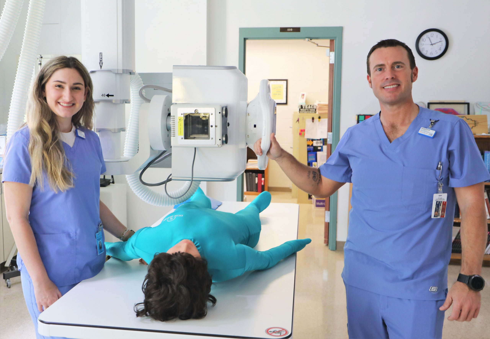

At Eloheh, we don’t just sell devices; we ensure they are used effectively and safely through support services and staff training.
| Staff Training | Calibration and Installation | Maintenance and Support |
|---|---|---|
|  | ||
We offer the best staff training in town to operate our equipment. Our staff training includes:
| Optimize the performance of our machines when we install and calibrate them up to your preferences. Our service includes:
| We offer preventive maintenance for your machine to always work at its best and support 24/7. Count with us for:
|
For more information regarding the importance of calibration, maintenance, and updates, click here.